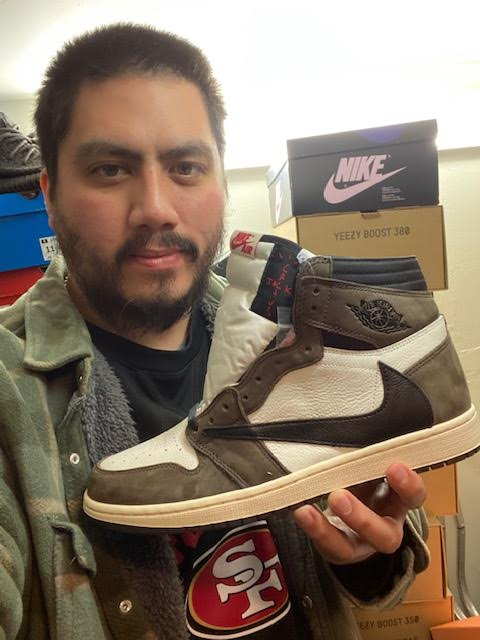
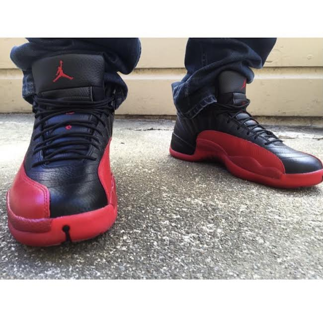
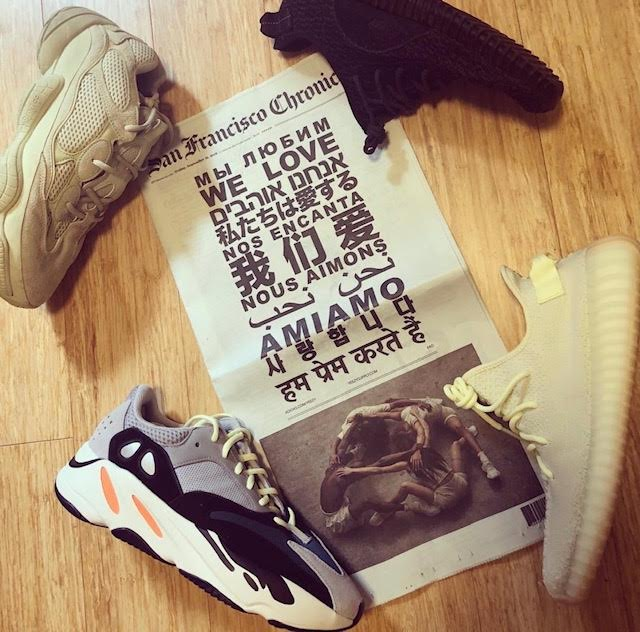
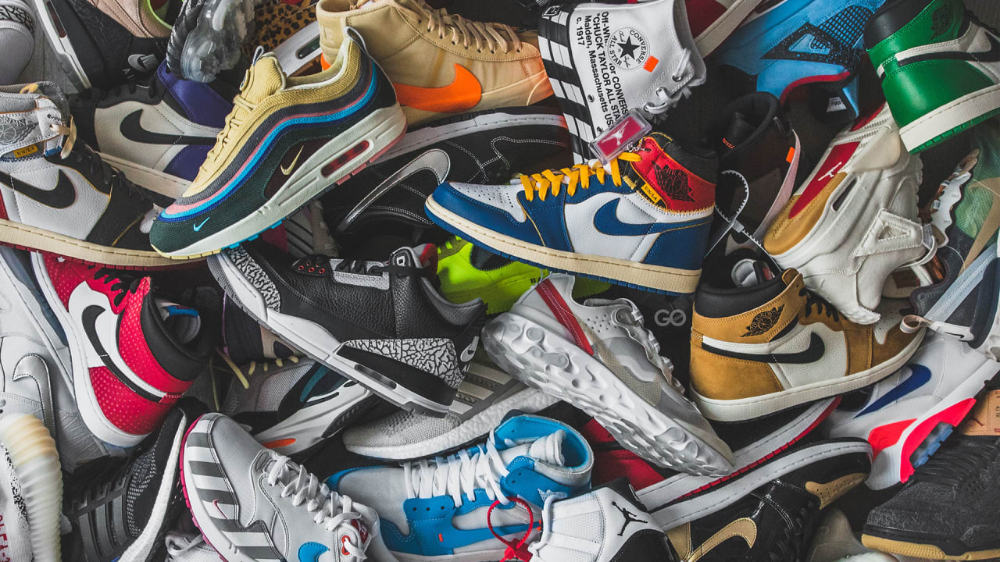
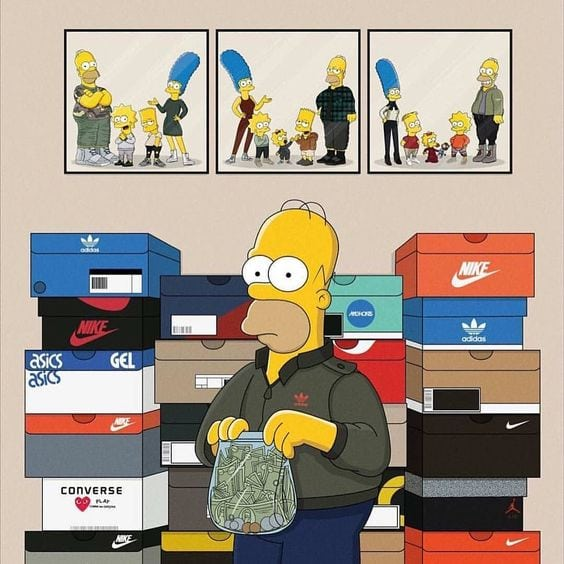
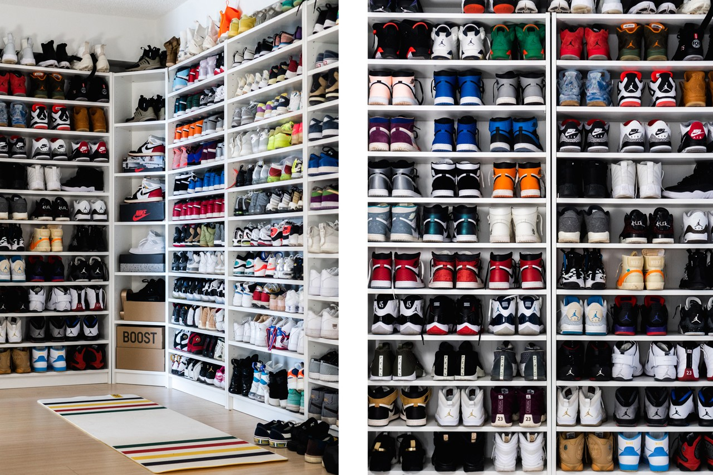

I am a Sneakerhead!
My Name is Gerson Mancilla. I am 36 years old and I was born and raised in San Francisco. My hobby is different from most I suppose, my hobby is collecting sneakers(sneaker head)! I like my hobby because I have always been into style and for me style starts with the shoes. I have always been into the different styles, colors and shapes shoes come in. It is not just one style of shoe that I like, I like them all from basketball shoes, running shoes, to skateboarding shoes.



What makes someone a Sneakerhead?

©Sean Go (@sean.go) • Instagram photos and videos
What does it mean to be a sneakerhead? A sneakerhead is someone who collects, trades and or admires sneakers as a hobby. Generally, sneakerheads are well-versed in the history of sneakers and study the market carefully. If you present them with a pair of sneakers, they can tell you their value, make and history.
Tips on how to start your own collection!
- Set up a shoes fund that you can use to finance new purchases within dipping into your living expenses.
- Store your sneakers in shoe bags if you've thrown away the original boxes.
- Build your reputation as a sneakerhead on Instagram. In some situations, companies will pay people or provide them with free shoes for promotional purposes.
- Don't forget to look for shoes at outlet stores and consignment shops. You can usually find great deals in these places.
- If you're shopping for shoes on sites like eBay, make sure the seller you're buying from is trusted.
- Save your old shoes when you outgrow them, and add them to your collection.

©https://montrealgotstyle.com/author/jeffersonmgs/
©https://www.complex.com/style/2018/07/promo-style-stands-best-dressed-nike-crown-league-toronto-week-1/
Here is a video link on top ten tips to start a collection,https://youtu.be/x88_3nlJLW4
Here is a helpful link providing some steps on starting your own sneaker collection,https://www.wikihow.com/Be-a-Sneakerhead
Websites to keep you up to date with sneaker release dates
Photos & Videos appendix credit list
- https://images.complex.com/complex/image/upload/c_fill,dpr_auto,f_auto,fl_lossy,g_face,q_auto,w_1280/cc5dvskqjobawc4mbygl.jpg
- https://montrealgotstyle.com/wp-content/uploads/2017/03/simpson-sneakerhead.jpg
- https://image-cdn.hypb.st/https%3A%2F%2Fhypebeast.com%2Fimage%2F2020%2F04%2Fhow-to-sneakerhead-at-home-sneakers-clean-organize-books-documentaries-sales-gallery-40.jpg?w=1600&cbr=1&q=90&fit=max
- https://www.instagram.com/tannyabstyle/?hl=en
- https://www.youtube.com/user/SneakerHeadInTheBay
- https://www.sneakerhead.com/
- https://hypebeast.com/footwear
- https://www.flightclub.com/
{kind=link}
{kind=link}
{kind=link}